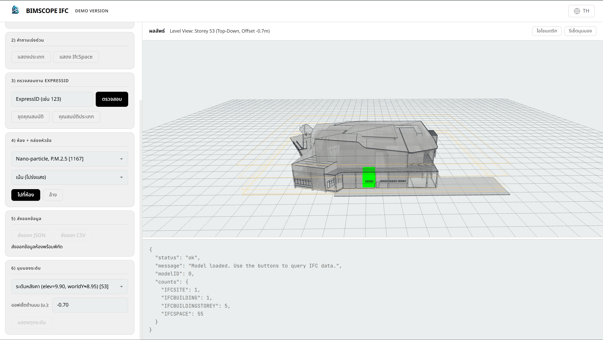

Loading experience...
Load any .ifc file, explore building data, inspect properties, analyze rooms, and export structured data — all without leaving your browser.

BIMSCOPE IFC was built to solve the real problems architects and engineers face when working with IFC files.
Installing heavy desktop software just to view an IFC file. Switching between multiple programs. No quick way to inspect properties or export data.
A lightweight, browser-based IFC viewer with built-in property inspection, room analysis, section box controls, and structured data export.
Save hours of work. Get complete property data instantly. Export room coordinates and BOQ data in JSON or CSV — ready for your workflow.
Professional-grade tools for loading, viewing, inspecting, and exporting IFC data.
Drag and drop any .ifc file to load and render a full 3D model in your browser.
Query entities by ExpressID. View property sets, type properties, and relationships.
Navigate to rooms, apply section boxes, and analyze IfcSpace data with coordinates.
Export structured room data with coordinates to JSON or CSV for downstream tools.
No downloads, no accounts, no complexity. Just open and inspect.
Browser-based
No installation
Full support for
industry-standard IFC
Structured data
export formats
Open demo
no license needed
Load your .ifc file and start exploring building data in seconds. No signup required.
Launch BIMSCOPE IFC